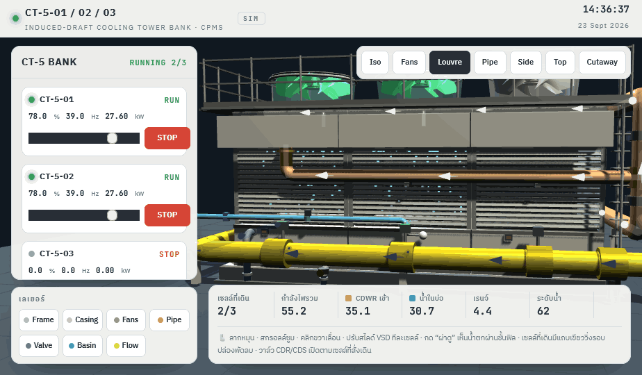
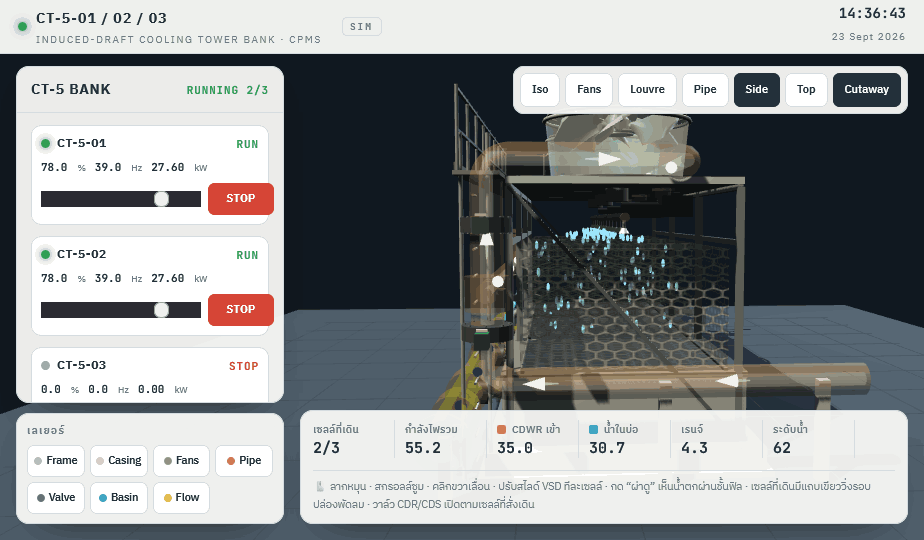
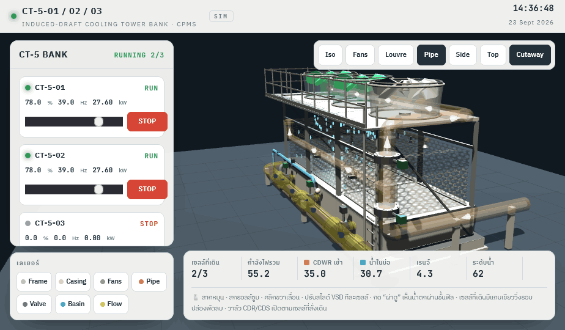

1. Casing closed (Iso)Casing and louvres as in the original. Honeycomb fill runs from the basin up to just below the spray nozzles.

2. Louvre faceWater droplets inside show through the louvre gaps. Stopped cells (CT-5-03) show no water.

3. Cutaway — internal water pathHeader → 4 spray nozzles per cell → fill → basin. Fill is transparent so falling water is visible.

4. Cutaway — in-pipe flowPipes turn ~35% transparent; flow darts and faint guide lines run inside the pipe. Closing CDR stops all flow; closing a CDS stops that cell only.
Interactive version: CT-5 Fill Media Preview (standalone).html — rotate, click valves to open/close, and toggle Cutaway (top-right). Live CT-5 page is unchanged until approved.